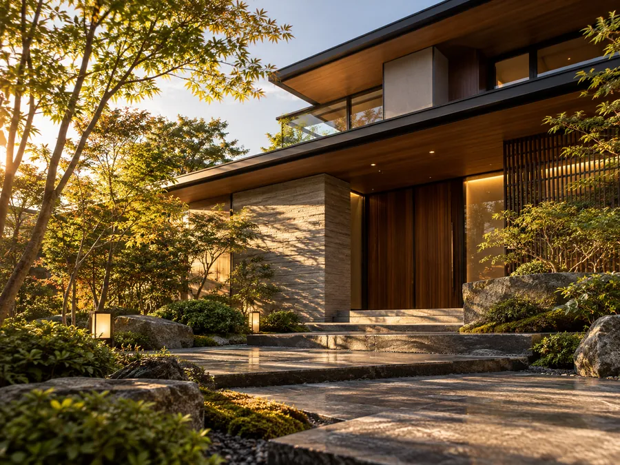

業務内容と料金の目安
結の

- 掲載している
金額は、 すべて 税込の 司法書 士報酬の 目安です。 不動産の 数・ 相続人の 数・ 書類の 量に よって 変わります。 - 報酬とは
別に、 登録免許税 （登記の ときに 国に 納める 税金）、 戸籍や 登記事項証明書の 取得費用、 郵送費などの 「実費」が 別途 かかります。 お見積りでは、 報酬と 実費を 分けて お示しします。 - 費用の
おおよその 見当は、 この ページの 下の 費用の 目安の 計算 （見本） でも 確かめられます。 - 初回相談無料
（60分程度）です。 正式な お見積りは、 無料相談の あとに お出しします。 お見積りの前に 費用が 発生する ことは ありません。
相続登記・相続手続き

亡くなった
こんな方に
- 親名義の
家や 土地を 相続し、 名義変更が まだの 方 - 何代も
前の 名義の ままの 不動産が あると 分かった 方 - 戸籍を
集めるのが 大変で、 どこから 手を つければ よいか 分からない 方 - 借金の
ほうが 多く、 相続放棄を 考えている 方
料金の目安
| 項目 | 報酬の |
|---|---|
| 相続登記の |
77,000円〜 |
| 戸籍の |
33,000円〜 |
| 遺産分 |
33,000円〜 |
| 法定 |
16,500円〜 |
| 相続放棄の |
44,000円〜 |
登録免許税
不動産登記（売買・贈与・抵当権抹消など）
不動産の
こんな方に
- 住宅ローンを
完済し、 銀行から 書類が 届いた 方 - 親から
子へ、 生前に 不動産を 贈与したい 方 - 親族間や
知人間で 不動産を 売買する 方 - 登記簿の
住所が 古い ままに なっている 方
法改
住所・氏名の変更登記が義務になりました
引っ越しや
あらかじめ法務局に
出典：法務省
料金の目安
| 項目 | 報酬の |
|---|---|
| 抵当権の |
16,500円〜 |
| 贈与に |
55,000円〜 |
| 売買に |
55,000円〜 |
| 住所・氏名の |
16,500円〜 |
登録免許税は、
会社・法人の登記
会社を
こんな方に
- これから
株式会社・ 合同会社を つくる 方 - 役員の
交代や 任期満了の 登記が 必要な 方 - 本店を
移転した、 社名や 事業内容を 変えた 方 - 登記を
しばらく していない 会社の 整理を したい 方
料金の目安
| 項目 | 報酬の |
|---|---|
| 株式会社の |
110,000円〜 |
| 合同会社の |
77,000円〜 |
| 役員の |
22,000円〜 |
| 本店の |
33,000円〜 |
| 商号・事業目的の |
33,000円〜 |
登録免許税
遺言・生前の備え
ご自身が
こんな方に
- ご家族に
負担を かけない よう、 遺言書を 準備して おきたい 方 - 自分で
書いた 遺言書の 内容が 正しいか 不安な 方 - 親の
判断力が 弱くなる 前に、 財産の 管理の 方法を 決めて おきたい 方 - すでに
判断力が 弱くなった ご家族の 成年後 見の 申立てを 考えている 方
料金の目安
| 項目 | 報酬の |
|---|---|
| 公正証書遺言の |
88,000円〜 |
| 自筆証書遺言の |
44,000円〜 |
| 任意後 |
110,000円〜 |
| 民事信託の |
220,000円〜 |
| 成年後 |
110,000円〜 |
公証人の
総額のモデルケース（目安）
よく
-
CASE A
実家の
相続登記 土地と
建物 （2つ）、 評価額の 合計 1,500万円、 相続人2人で 話し合って 分ける 場合 司法書士の
報酬 （税込） 154,000円 - 相続登記の
申請 （ 不動産2つ） 88,000円 - 戸籍の
収集・相続関係 33,000円説明図 - 遺産分
割協議書の 33,000円作成
実費
（税・証明書など） 約68,000円 - 登録免許税
（1,500万円 × 0.4%） 60,000円 - 戸籍・住民票などの
取得費用 約5,000円 - 登記事項証明書・郵送費など
約3,000円
総額の
目安約222,000円 - 相続登記の
-
CASE B
住宅
ローン 完済後の 抵当権の 抹消 土地と
建物 （2つ）の 抵当権を 消す 場合 司法書士の
報酬 （税込） 16,500円 - 抵当権の
抹消 16,500円
実費
（税・証明書など） 約4,000円 - 登録免許税
（1,000円 × 2つ） 2,000円 - 登記事項証明書・郵送費など
約2,000円
総額の
目安約20,500円 - 抵当権の
-
CASE C
会社の
役員の 変更 資本金1億円以下の
株式会社で、 役員が 同じ 顔ぶれで 続ける （重任） 場合 司法書士の
報酬 （税込） 22,000円 - 役員の
変更 22,000円
実費
（税・証明書など） 約11,000円 - 登録免許税
10,000円 - 登記事項証明書など
約1,000円
総額の
目安約33,000円 - 役員の
※モデルケースは
司法書士がお受けできること・ほかの専門家の業務
手続きに
司法書士がお受けできること
- 不動産の
登記 （相続・売買・贈与・ 抵当権抹消など） - 会社・法人の
登記 （設立・役員変更・ 本店移転など） - 相続放棄・
成年後 見など、 裁判所に 出す 書類の 作成 - 遺言書・
遺産分 割協議書・ 信託契約書などの 書類の 作成と、 そのご相談 - 戸籍の
収集、 法定相続情報 一覧図の 取得
ほかの専門家の業務（ご案内します）
- 相続税・
贈与税の 申告や 税金の 相談 → 税理士 - 相続人
どうしで 争いが ある 場合の 交渉・ 裁判の 代理 → 弁護士 - 建設業許可などの
許認可、 役所に 出す 書類 → 行政書士 - 年金や
社会保険の 手続き → 社会保険労務士 - 土地の
測量・ 分筆などの 登記 → 土地家屋調査士
ここに
はじめてのご相談は、 無料です
「何から
※
お電話：000-0000-0000
受付時間 平日 9:00〜18:00／土曜 10:00〜17:00